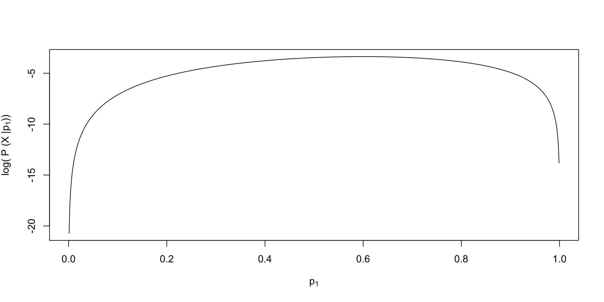
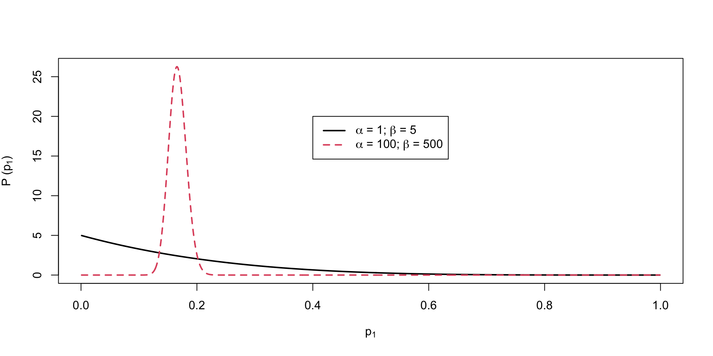
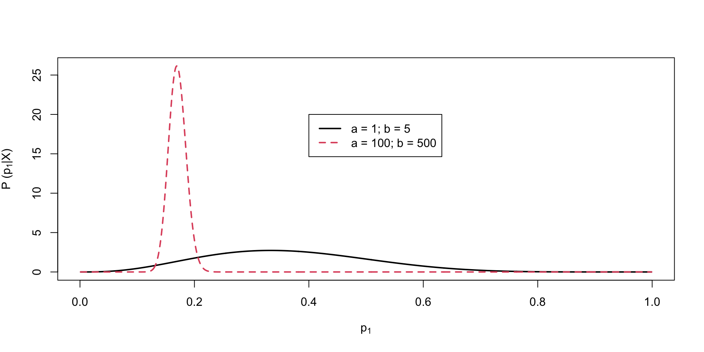
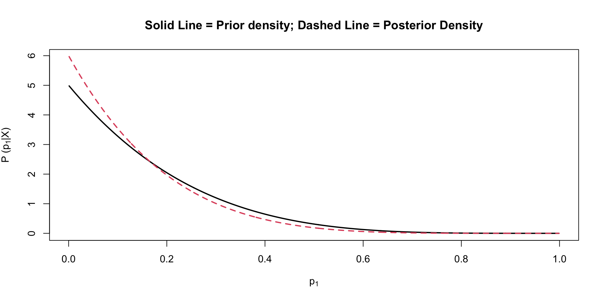

Introduction to Bayesian Statistics
SMIP Summer School 2025: Lecture 03
The Basics of Bayesian Analyses
- Bayesian statistical analysis refers to the use of models where some or all of the parameters are treated as random components
- Each parameter comes from some type of distribution
- The likelihood function of the data is then augmented with an additional term that represents the likelihood of the prior distribution for each parameter
- Think of this as saying each parameter has a certain likelihood – the height of the prior distribution
- The final estimates are then considered summaries of the posterior distribution of the parameter, conditional on the data
- In practice, we use these estimates to make inferences, just as is done when using non-Bayesian approaches (e.g., maximum likelihood/least squares)
Why are Bayesian Methods Used?
- Bayesian methods get used because of the relative accessibility of one method of estimation (MCMC – to be discussed shortly)
- There are four main reasons why people use MCMC:
- Missing data
- Lack of software capable of handling large sized analyses (e.g., computational speed)
- New models/generalizations of models not available in software
- Philosophical reasons (e.g., Bayesian ideals)
Perceptions and Issues with Bayesian Methods
- The use of Bayesian statistics has been controversial
- The use of certain prior distributions can produce results that are biased or reflect subjective judgment rather than objective science
- Most MCMC estimation methods are computationally intensive
- Many “easy” Bayesian programs take a lot of syntax
- Understanding of what Bayesian methods had been very limited outside the field of mathematical statistics
- Over the past 20 years, Bayesian methods have become widespread – making new models estimable and becoming standard in some social science fields
How Bayesian Statistics Work
Bayesian methods rely on Bayes’ Theorem
\[P (A \mid B) = \frac{P(B\mid A)P(A)}{P(B)} \propto P(B\mid A)P(A)\]
Here:
- \(P(A)\) is the prior distribution (pdf) of A (i.e., a Bayesian method)
- \(P(B)\) is the marginal distribution (pdf) of B
- \(P(B \mid A)\) is the conditional distribution (pdf) of B, given A
- \(P (A \mid B)\)is the posterior distribution (pdf) of A, given B
A Live Bayesian Example
Suppose we wanted to assess the probability of rolling a 1 on a 6-sided die: \[p_1 = P(D=1)\]
We then collect a sample of data \(\boldsymbol{X} = \{0,1,0,1,1 \}\)
- These are independent tosses of the die
The posterior distribution of the probability of a 1 conditional on the data is: \[P(p_1 \mid \boldsymbol{X})\]
We can determine this via Bayes theorem: \[P(p_1 \mid \boldsymbol{X}) = \frac{P(\boldsymbol{X} \mid p_1)P(p_1)}{P(\boldsymbol{X})} \propto P(\boldsymbol{X} \mid p_1)P(p_1)\]
Defining the Likelihood Function \(P(\boldsymbol{X} \mid p_1)\)
The likelihood of the data given the parameter:
\[P(\boldsymbol{X} \mid p_1) = \prod_{i=1}^N p_1^{X_i} \left(1-p_1\right)^{(1-X_i)}\]
- Any given roll of the dice \(X_i\) is a Bernoulli variable \(X_i \sim B(p_1)\)
- A “success” is defined by rolling a one
- The product in the likelihood function comes from each roll being independent
- The outcome of a roll does not depend on previous or future rolls
Visualizing the Likelihood Function

Choosing the Prior Distribution for \(p_1\)
We must now pick the prior distribution of \(p_1\):
\[P(p_1)\]
- Our choice is subjective: Many distributions to choose from
- What we know is that for a “fair” die, the probability of rolling a one is \(\frac{1}{6}\)
- But…probability is not a distribution
- Instead, let’s consider a Beta distribution \(p_1 \sim Beta\left(\alpha, \beta\right)\)
The Beta Distribution
For parameters that range between zero and one (or two finite end points), the Beta distribution makes a good choice for a prior:
\[P(p_1) = \frac{\left( p_1\right)^{\alpha-1} \left(1-p_1 \right)^{\beta1-1}}{B\left(\alpha, \beta\right)}, \] where:
\[B\left(\alpha, \beta\right) = \frac{\Gamma\left(\alpha\right)\Gamma\left(\beta\right)}{\Gamma\left(\alpha+\beta\right)}, \] and,
\[\Gamma\left(z \right) = \int_0^\infty t^{z-1} e^{-t}dt\]
More Beta Distribution
The Beta distribution has a mean of \(\frac{\alpha}{\alpha+\beta}\)
- The parameters \(\alpha\) and \(\beta\) are called hyperparameters
- Hyperparameters are parameters of prior distributions
- We can pick values of \(\alpha\) and \(\beta\) to correspond to \(\frac{1}{6}\)
- Many choices: \(\alpha=1\) and \(\beta=5\) have the same mean as \(\alpha=100\) and \(\beta=500\)
- What is the difference?
- How strongly we feel in our beliefs…as quantified by…
More More Beta Distribution
The Beta distribution has a variance of \(\frac{\alpha\beta}{\left(\alpha+\beta \right)^2 \left(\alpha+\beta+1 \right))}\)
- Choosing \(\alpha=1\) and \(\beta=5\) yields a prior with mean \(\frac{1}{6}\) and variance \(0.02\)
- Choosing \(\alpha=100\) and \(\beta=500\) yields a prior with mean \(\frac{1}{6}\) and variance \(0.0002\)
- The smaller prior variance means the prior is more informative
- Informative priors are those that have relatively small variances
- Uninformative priors are those that have relatively large variances
Visualizing \(P(p_1)\)

The Posterior Distribution
Choosing a Beta distribution for a prior for \(p_1\) is very convenient
- When combined with Bernoulli (Binomial) data likelihood the posterior distribution can be derived analytically
- The posterior distribution is also a Beta distribution
- \(\alpha = a + \sum_{i=1}^NX_i\) (\(a\) is the hyperparameter of the prior distribution)
- \(\beta = b + N - \sum_{i=1}^NX_i\) (\(b\) is the hyperparameter of the posterior distribution)
- The Beta prior is said to be a conjugate prior: A prior distribution that leads to a posterior distribution of the same family
- Here, prior == Beta and posterior == Beta
Visualizing The Posterior Distribution

Bayesian Estimates are Summaries of the Posterior Distribution
To determine the estimate of \(p_1\), we use summaries of the posterior distribution:
- With prior hyperparameters \(a=1\) and \(b=5\)
- \(\hat{p}_1 = \frac{1+3}{1+3 +5+2} = \frac{4}{11} = .36\)
- SD =
0.1388659
- With prior hyperparameters \(a=100\) and \(b=500\)
- \(\hat{p}_1 = \frac{100+3}{(100+3) + (500+2)} = \frac{103}{605} = .17\)
- SD =
0.0152679
- The standard deviation (SD) of the posterior distribution is analogous to the standard error in frequentist statistics
Bayesian Updating
We can use the posterior distribution as a prior!
Let’s roll a die to find out how…

Section Summary
This section was a very quick introduction to Bayesian concepts:
- prior distribution
- hyperparameters
- informative/uninformative
- conjugate prior
- data likelihood
- posterior distribution
- Next we will discuss MCMC and Stan